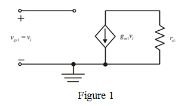
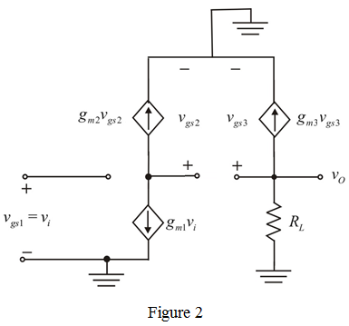
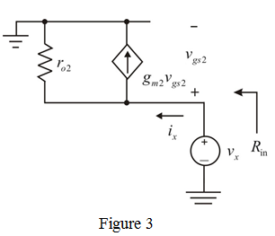

Apply Kirchhoff’s current law at the transistor  ’s output node.
’s output node.
…… (1)
Refer to Figure P7.53 in the textbook for the circuit.
The small signal equivalent of a MOS transistor is shown in Figure 1.

The small signal equivalent circuit diagram for the circuit by excluding the output resistance is shown in Figure 2.

Apply Kirchhoff’s current law at the transistor ’s output node.
…… (1)
The output voltage is,
Thus, the output voltage is, .
Substitute for  in the equation.
in the equation.
Therefore, the voltage gain is,
The transconductance equation is, . Hence, the voltage gain is,
Therefore, small signal voltage gain is,
 is shown in Figure 3.
is shown in Figure 3. 
Apply Kirchhoff’s current law to Figure 3.
Thus, the input resistance of transistor  is,
is,
The total resistance between drain of  and ground is, .
and ground is, .
The common source voltage gain is,
Substitute for  in the equation.
in the equation.
Thus, the common source voltage gain is, .